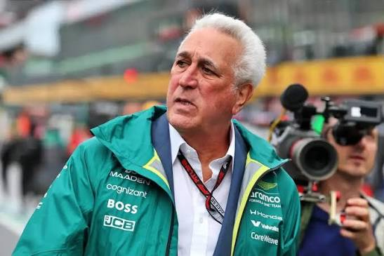
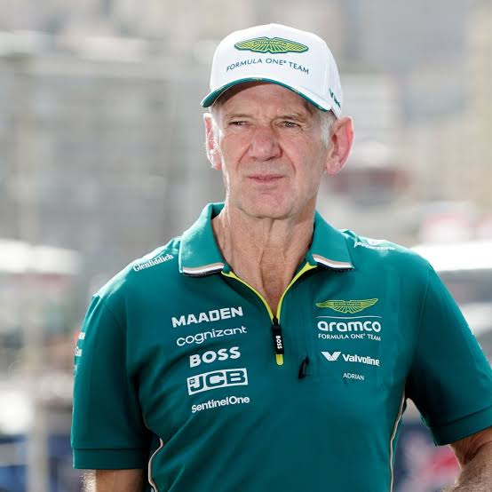
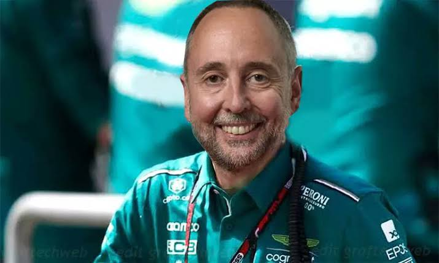
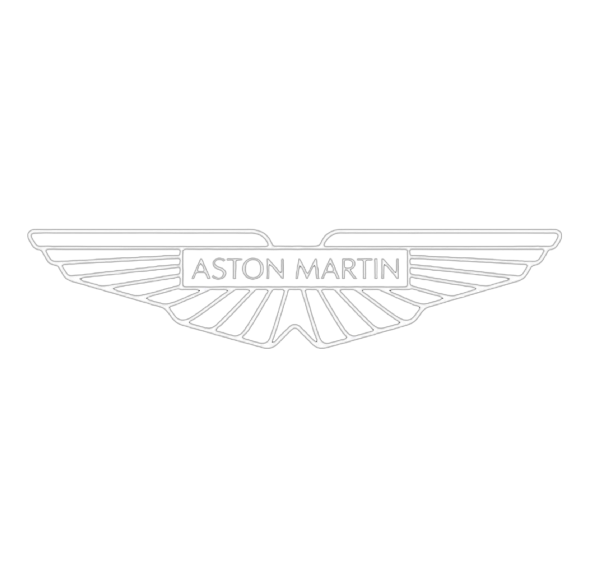
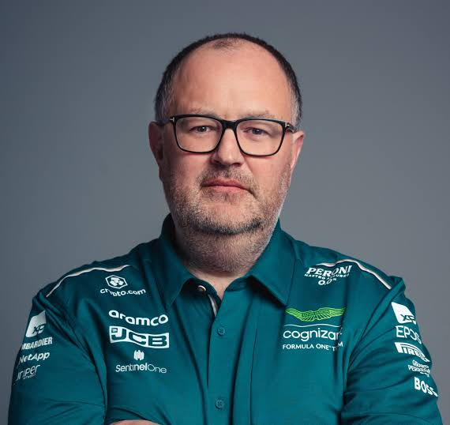
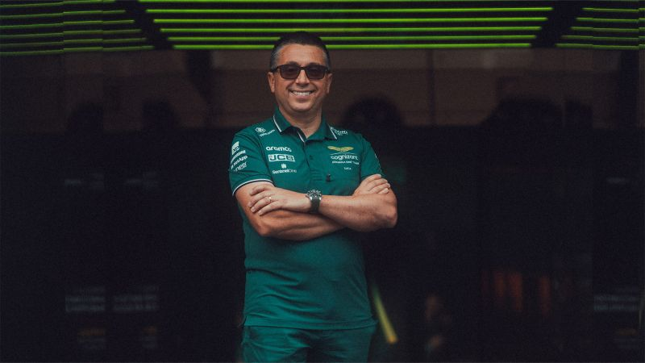
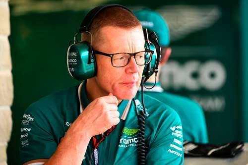

01
CEO

CEO
Lawrence Stroll
Lidera a Aston Martin e conduz as principais decisões estratégicas da equipe.
As principais figuras responsáveis pela direção, engenharia e desempenho da ASTON MARTIN .

Lidera a Aston Martin e conduz as principais decisões estratégicas da equipe.

Responsável pela liderança técnica e pela direção da equipe em 2026.

Lidera o desenvolvimento técnico e a evolução do carro da Aston Martin.

Comanda o desenvolvimento aerodinâmico e a evolução do desempenho do carro.

Responsável pelo desempenho do carro e pelo trabalho de performance da equipe.

Atua no desenvolvimento e na engenharia do carro da Aston Martin.

Atua na estratégia da equipe e na integração das parcerias técnicas para 2026.
Responsável pela operação de engenharia e pelo trabalho da equipe durante os Grandes Prêmios.